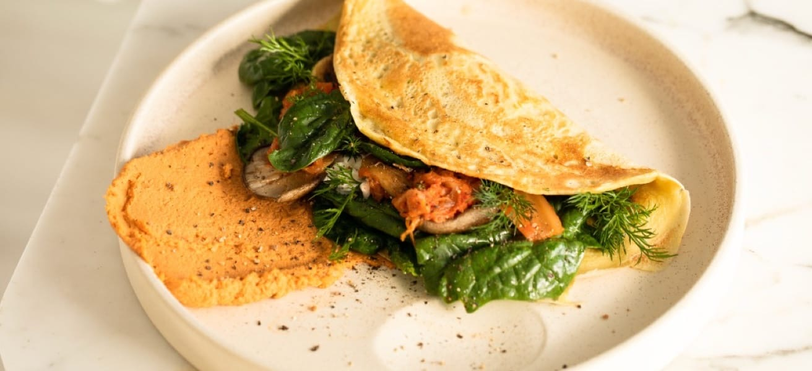

Basit Omlet Tarifi
Kolay ve hızlı bir yemek, her öğün için mükemmel bir seçim.
Bu klasik omlet, mükemmel şekilde pişirilmiş çırpılmış yumurtalarla yapılır ve isteğe bağlı olarak peynir, sebzeler veya et ile doldurulabilir.
Hazırlık Süresi
- Toplam: Yaklaşık 10 dakika
- Hazırlık: 5 dakika
- Pişirme: 5 dakika
Malzemeler
- 2-3 büyük yumurta
- Damak zevkinize göre tuz
- Damak zevkinize göre karabiber
- 1 yemek kaşığı tereyağı veya sıvı yağ
- Opsiyonel iç malzemeler: Peynir, doğranmış sebzeler, pişmiş etler, otlar
Yapılışı
- Yumurtaları çırpın: Bir kasede yumurtaları bir tutam tuz ve karabiber ile iyice çırpın. Daha kabarık bir doku için bir yemek kaşığı su veya süt ekleyebilirsiniz.
- Tavayı ısıtın: Yapışmaz bir tavayı orta ateşte ısıtın ve tereyağı veya yağı ekleyin.
- Omleti pişirin: Tereyağı eriyip hafifçe köpürdüğünde, yumurtaları tavaya dökün. Yumurtaların yüzeyi eşit şekilde kaplaması için tavayı hafifçe eğin.
- İç malzemeleri ekleyin (isteğe bağlı): Yumurtalar kenarlardan katılaşmaya başladığında ancak ortası hala hafif akışkan olduğunda, seçtiğiniz iç malzemeleri omletin yarısına serpin.
- Katlayın ve servis edin: Omlet pişmeye devam ederken, kenarlarından dikkatlice kaldırın ve iç malzemelerin üzerine katlayın. Bir dakika daha pişirdikten sonra tabağa kaydırarak alın.
- Afiyet olsun: Sıcak servis edin, gerekirse üzerine ek tuz ve karabiber serpebilirsiniz.
Besin Değerleri
Aşağıdaki besin değerleri, iç malzemeler eklenmeden hesaplanmıştır.